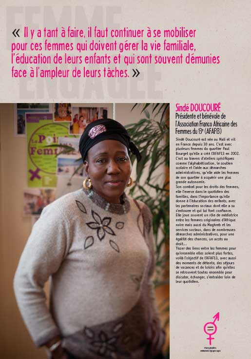

Cécile Guyart
Directrice artistique

365 jours à la mairie

Paris Polar 2009 ; réalisation d'une maquette à l'échelle 1, photographie et retouches.
Déclinaison sur tous les supports (affiches, flyers, cartes com', web).
Invitation au compte-rendu de mandat de Jérôme Coumet, décembre 2009
Carte de voeux du maire 2010
-

-

-
-
-
-
8 mars 2010 ; réalisation (à la main) de la pancarte 1, photographie et retouches.
Déclinaison sur tous les supports (affiches, flyers, cartes com', web).
Réalisation des panneaux de l'exposition associée. Portraits par Emmanuel NGuyen Ngoc.

Guide de la petite enfance 2010. Doudou réalisé à la main.
Diverses affiches : Semaine italienne, Al-mawled en fête, Printemps des seniors (conception école Estienne), Nouvel an chinois.
© 2013 Cecile Guyart. Directrice artistique. Paris. Tous droits réservés.